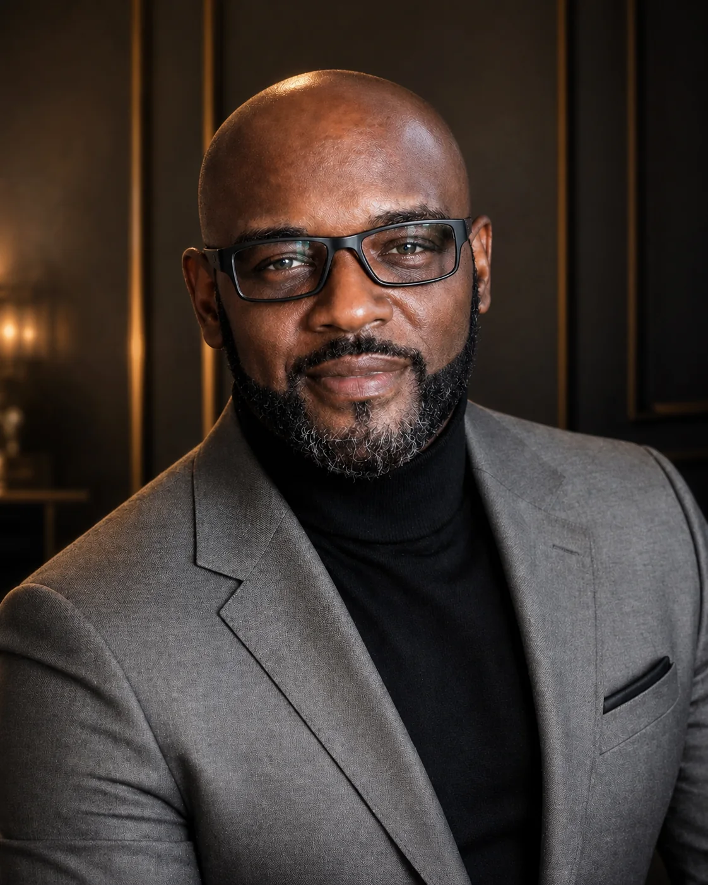
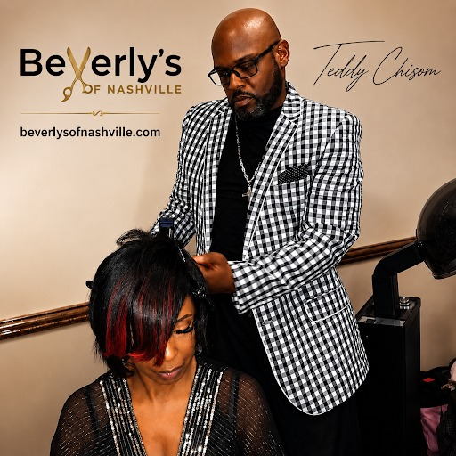

Master color
Dimensional color, highlights, gray coverage, glossing, and thoughtful corrective work.
Explore color ↗The artist behind Beverly's
Teddy Chisom is a Nashville hairstylist, master colorist, and custom wig artist known online as The Hair Care King. His work begins with listening and ends with a look designed around the person wearing it.

A personal standard
Every appointment is personal. Teddy considers condition, movement, texture, maintenance, and lifestyle before recommending a service or shaping a finished look.

Inside the appointment
Teddy wants every client to understand the plan before the service begins. That means talking honestly about the starting point, what the hair can support, how the finished look will live day to day, and what it will take to maintain it.
The specialties
Teddy's work spans transformative color, custom wigs, silk presses, healthy-hair styling, extensions, and camera-ready finishes.
Dimensional color, highlights, gray coverage, glossing, and thoughtful corrective work.
Explore color ↗Consultation, fit, construction, color, shaping, installation, and ongoing maintenance.
Explore wigs ↗Cleanse, condition, blowout, trim, pressing, and finish—with the health of the hair in view.
Explore styling ↗A coordinated hair, makeup, and portrait experience designed to leave you camera-ready.
See the package ↗Take the next seat
Start with a quick call or text. For color corrections and custom wigs, a consultation may be recommended before the service date.